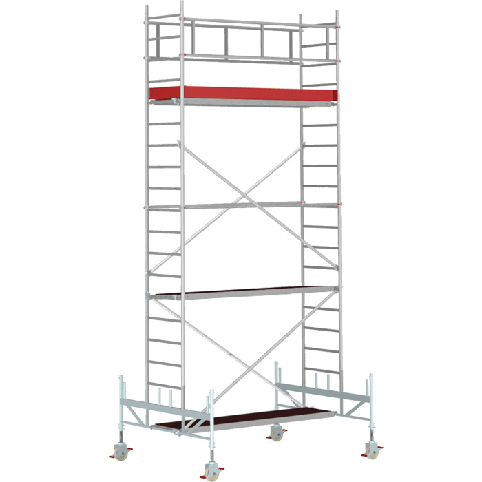
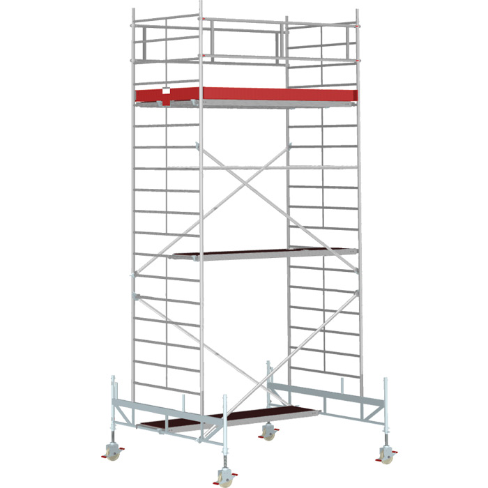

ALUFIX
ALUFIX 5000
Pracovní plošina přibližně 0,6 × 2,7 m; dostupnou výšku a sestavu potvrdíme při poptávce.
Více informacíPOJÍZDNÉ LEŠENÍ ALUFIX
Mobilní hliníkové pracovní věže pro práci v halách, dílnách i na volném prostranství. Vybereme sestavu podle potřebné pracovní výšky.

NABÍDKA
ALUFIX
Pracovní plošina přibližně 0,6 × 2,7 m; dostupnou výšku a sestavu potvrdíme při poptávce.
Více informací
ALUFIX
Pracovní plošina přibližně 1,2 × 2,7 m; varianta pro větší pracovní prostor.
Více informacíPOPTÁVKA
Napište pracovní výšku, místo a dobu pronájmu. Aktuální podmínky a cenu potvrdíme podle zadání.
Kontaktovat nás